Candidate List 20260901Last night — ZTF: 1,886 passed basic cuts (79 young) · LSST: 0 passed basic cuts (0 young)Previous Day Next Day
Section 1: New Sources (age<1d) Section 2: Old (1-5d) sources observed last nightplaceholder
Section 1: New Afterglow/FBOT Cands Last Night (1)
1. [ZTF] ZTF26abroxay (Afterglow?) [Back to Top] [Share] [Trigger Swift] [Fritz Alert] [Fritz Source] [Lasair]RA, Dec: 286.91112, -12.91693 19h 7m38.67s, -12d-55m-0.95sGalactic (l, b): 23.15451, -9.39392 ext(g-r) = 0.364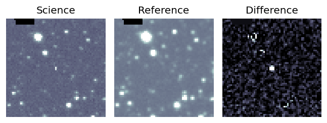
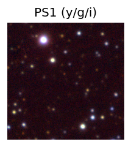

TESS: Sectors [80 92]
PS1: 1 source in 3 arcsec Closest: d = 3.33 arcsec photoz=0.31+/-0.22 peak abs mag = -23.08
LegacySurvey: 0 sources in 3 arcsec
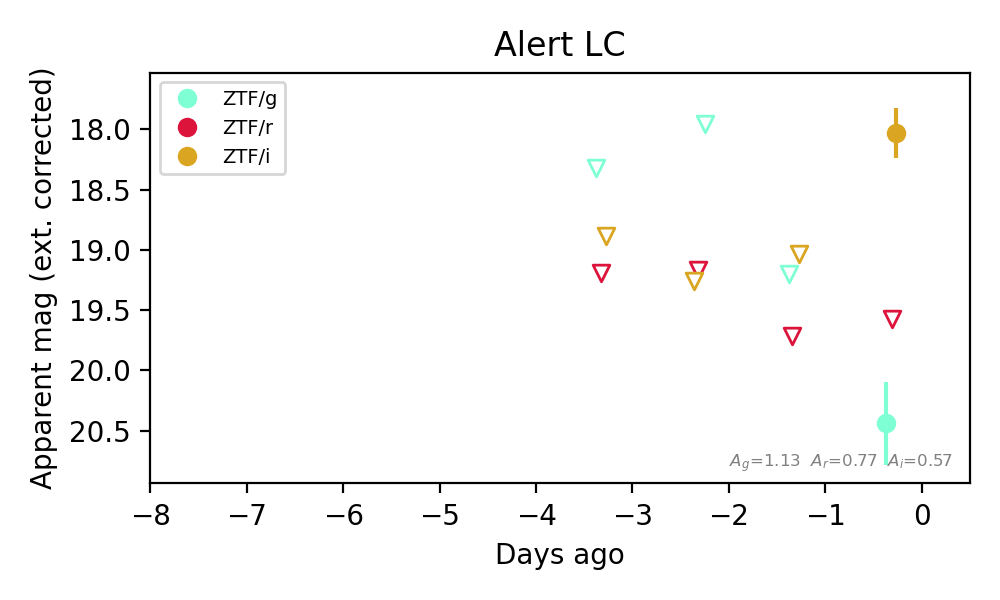
Extinction-corrected gr color:
From alerts: 0.86 +/- 99 mag
Extinction-corrected gi color:
From alerts: 2.41 +/- 0.4 mag
Extinction-corrected ri color:
From alerts: 1.55 +/- 99 mag
Consistent with synchrotron, g-r>0!
Rise Rate:
i: 1.0 mag/day
Fade Rate:
Section 2: Older Sources Observed Last Night (4)
0. [ZTF] ZTF26abrjkdt (Afterglow?) [Back to Top] [Share] [Trigger Swift] [Fritz Alert] [Fritz Source] [Lasair]RA, Dec: 279.27311, 2.2398 18h37m5.55s, 2d14m23.28sGalactic (l, b): 33.29278, 4.21215 ext(g-r) = 1.734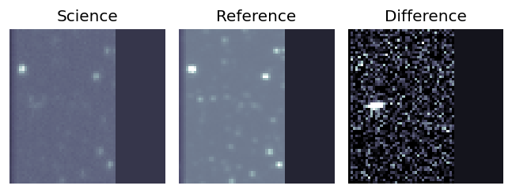
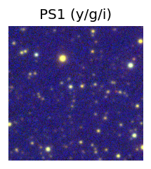

TESS: Sectors [ 80 118]
PS1: 0 sources in 3 arcsec
LegacySurvey: 0 sources in 3 arcsec
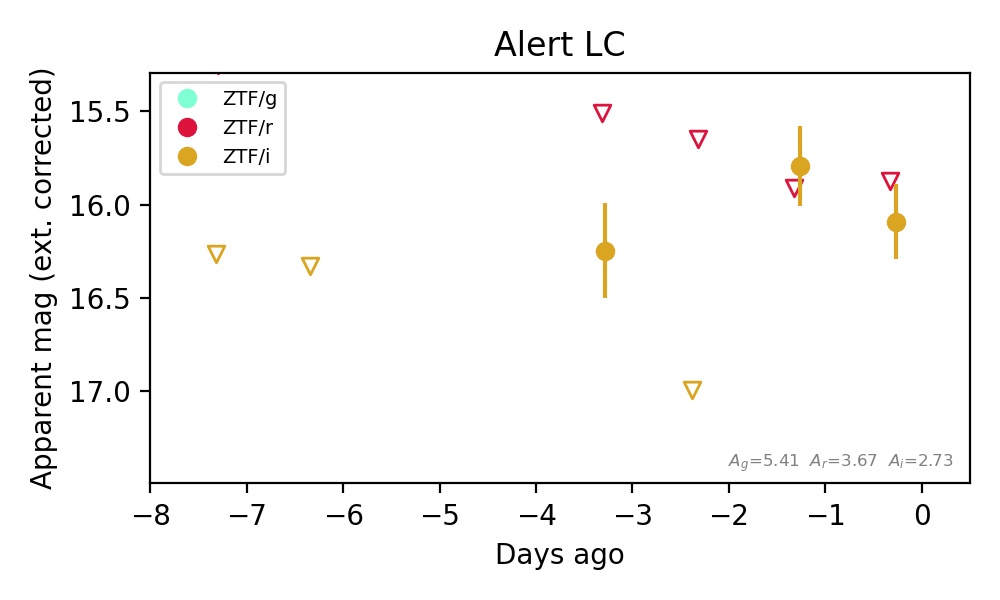
Extinction-corrected gi color:
From alerts: -1.04 +/- 99 mag
Extinction-corrected ri color:
From alerts: -0.22 +/- 99 mag
Rise Rate:
i: 1.08 mag/day
Fade Rate:
i: 0.83 mag/day
1. [ZTF] ZTF26abrjrpc (Afterglow?) [Back to Top] [Share] [Trigger Swift] [Fritz Alert] [Fritz Source] [Lasair]RA, Dec: 289.64562, -4.35094 19h18m34.95s, -4d-21m-3.37sGalactic (l, b): 32.13378, -8.01628 ext(g-r) = 0.541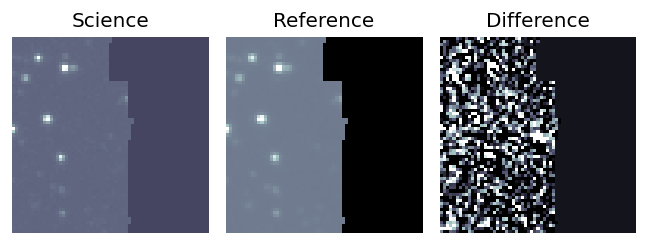
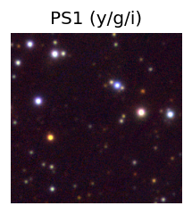

TESS: Sectors 80
SDSS (<15 kpc):Found SDSS phot-z: z=0.05; peak abs mag = -18.44
PS1: 1 source in 3 arcsec Closest: d = 4.01 arcsec photoz=0.88+/-0.11 peak abs mag = -25.36
LegacySurvey: 0 sources in 3 arcsec
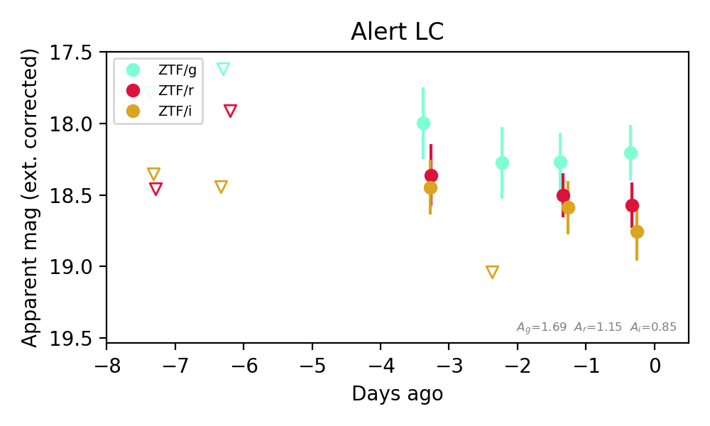
Extinction-corrected gr color:
From alerts: -0.37 +/- 0.25 mag
Extinction-corrected gi color:
From alerts: -0.55 +/- 0.28 mag
Extinction-corrected ri color:
From alerts: -0.19 +/- 0.25 mag
Consistent with synchrotron, g-r>0!
Rise Rate:
g: 0.1 mag/day
r: 0.13 mag/day
i: 0.4 mag/day
Fade Rate:
i: 0.65 mag/day
2. [ZTF] ZTF26abrncde (FBOT?) [Back to Top] [Share] [Trigger Swift] [Fritz Alert] [Fritz Source] [Lasair]RA, Dec: 220.73623, 30.05219 14h42m56.69s, 30d 3m7.88sGalactic (l, b): 46.38477, 65.40929 ext(g-r) = 0.015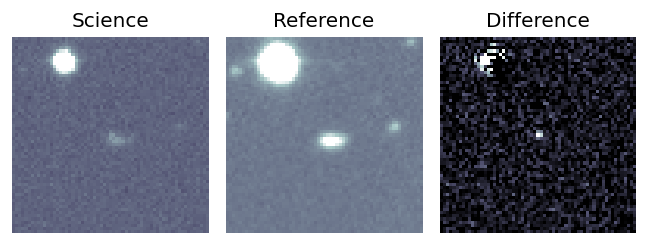
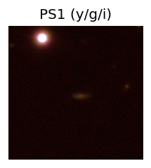
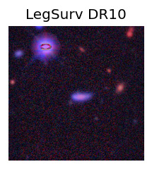
TESS: Sectors [23 24 50 77]
SDSS (<15 kpc):Found SDSS phot-z: z=0.89; peak abs mag = -24.36
PS1: 0 sources in 3 arcsec
LegacySurvey: 1 sources in 3 arcsec Closest: d = 0.81 arcsec, 283.7 deg (east of north) photoz=0.51 (68% bounds 0.39, 0.67), type=REX peak abs mag (ext. corrected) = -22.89 (68% bounds -22.2, -23.62)
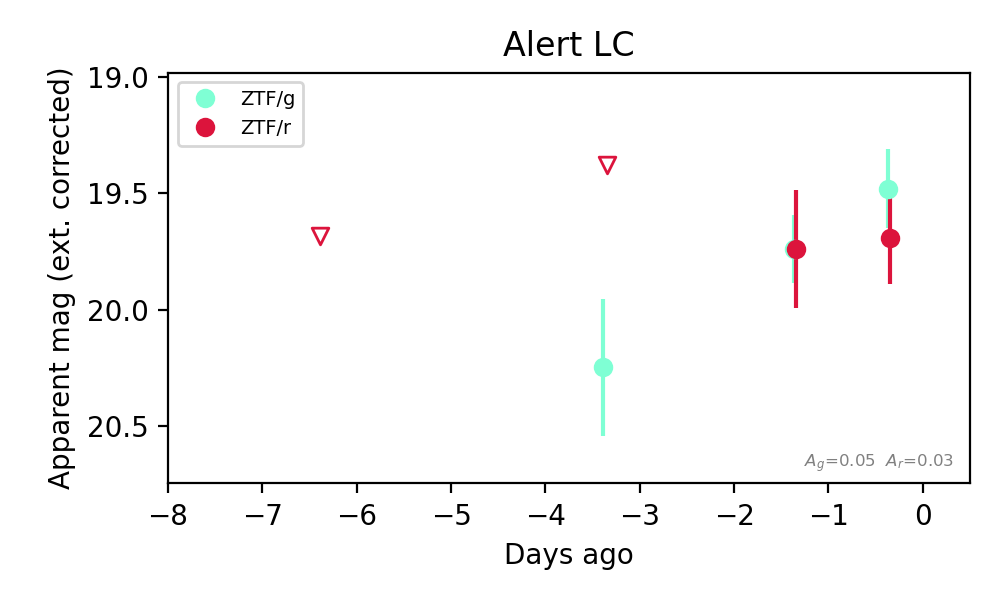
Extinction-corrected gr color:
From alerts: -0.21 +/- 0.26 mag
Consistent with synchrotron, g-r>0!
Rise Rate:
g: 0.25 mag/day
r: 0.04 mag/day
Fade Rate:
3. [ZTF] ZTF26abrngpw (Afterglow?) [Back to Top] [Share] [Trigger Swift] [Fritz Alert] [Fritz Source] [Lasair]RA, Dec: 253.99395, 61.5151 16h55m58.55s, 61d30m54.36sGalactic (l, b): 91.2696, 37.27879 ext(g-r) = 0.06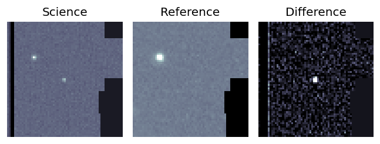
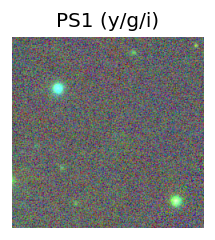
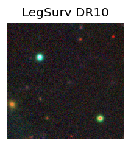
TESS: Sectors [ 14 15 16 18 19 20 21 22 23 24 25 26 40 41 47 48 49 50
51 52 53 55 56 58 59 60 73 74 75 76 77 78 79 80 81 82
83 85 86 117 118 119 120 121]
PS1: 0 sources in 3 arcsec
LegacySurvey: 1 sources in 3 arcsec Closest: d = 2.24 arcsec, 238.3 deg (east of north) photoz=0.85 (68% bounds 0.64, 1.03), type=REX peak abs mag (ext. corrected) = -25.17 (68% bounds -24.4, -25.68)
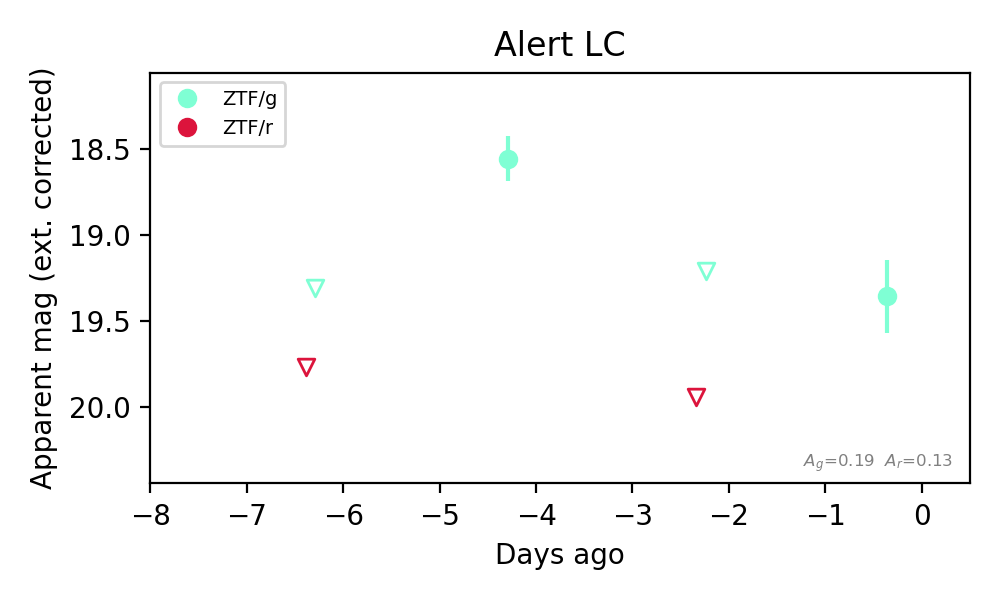
Rise Rate:
g: 0.38 mag/day
Fade Rate:
g: 0.32 mag/day